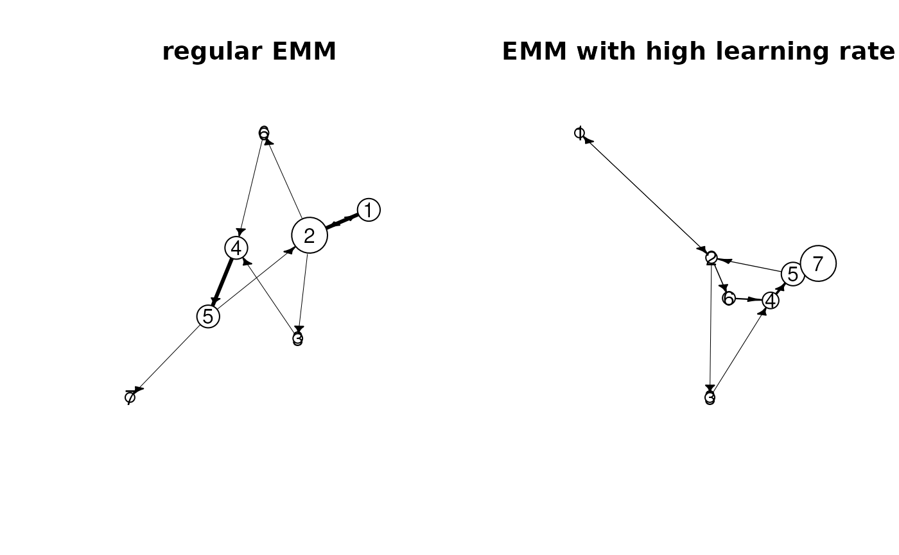

Reduces the weight of old observations in the data stream.
build has a learning rate parameter
lambda. If this parameter is set, build automatically
fades all counts before a new data point is added. The second
mechanism is to explicitly call the function~fade whenever
fading is needed. This has the advantage that the overhead of manipulating
all counts in the EMM can be reduced and that fading can be used in a more
flexible manner. For example, if the data points are arriving at an irregular
rate, fade could be called at regular time intervals
(e.g., every second).
Details
Old data points are faded by using a weight. We define the weight for data that is \(t\) timesteps in the past by the following strictly decreasing function: $$w_t = 2^{-\lambda t}$$
Since the weight is multiplicative, it can be applied iteratively by multiplying at each time step all counts by \(2^{-\lambda}\). For the clustering algorithm the weight of the clusters (number of data points assigned to the cluster) is faded. For the EMM the initial count vector and all transition counts are faded.
Examples
data("EMMTraffic")
## For the example we use a very high learning rate
## this calls fade after each new data point
emm_l <- EMM(measure="eJaccard", threshold=0.2, lambda = 1)
build(emm_l, EMMTraffic)
## build a regular EMM for comparison
emm <- EMM(measure="eJaccard", threshold=0.2)
build(emm, EMMTraffic)
## compare the transition matrix
transition_matrix(emm)
#> 1 2 3 4 5 6 7
#> 1 0.1111111 0.3333333 0.1111111 0.1111111 0.1111111 0.1111111 0.1111111
#> 2 0.2000000 0.1000000 0.2000000 0.1000000 0.1000000 0.2000000 0.1000000
#> 3 0.1250000 0.1250000 0.1250000 0.2500000 0.1250000 0.1250000 0.1250000
#> 4 0.1111111 0.1111111 0.1111111 0.1111111 0.3333333 0.1111111 0.1111111
#> 5 0.1111111 0.2222222 0.1111111 0.1111111 0.1111111 0.1111111 0.2222222
#> 6 0.1250000 0.1250000 0.1250000 0.2500000 0.1250000 0.1250000 0.1250000
#> 7 0.1428571 0.1428571 0.1428571 0.1428571 0.1428571 0.1428571 0.1428571
transition_matrix(emm_l)
#> 1 2 3 4 5 6 7
#> 1 0.1427576 0.1434546 0.1427576 0.1427576 0.1427576 0.1427576 0.1427576
#> 2 0.1404325 0.1401588 0.1412538 0.1401588 0.1401588 0.1576786 0.1401588
#> 3 0.1425390 0.1425390 0.1425390 0.1447661 0.1425390 0.1425390 0.1425390
#> 4 0.1327801 0.1327801 0.1327801 0.1327801 0.2033195 0.1327801 0.1327801
#> 5 0.1240310 0.1317829 0.1240310 0.1240310 0.1240310 0.1240310 0.2480620
#> 6 0.1379310 0.1379310 0.1379310 0.1724138 0.1379310 0.1379310 0.1379310
#> 7 0.1428571 0.1428571 0.1428571 0.1428571 0.1428571 0.1428571 0.1428571
## compare graphs
op <- par(mfrow = c(1, 2), pty = "m")
plot(emm, main = "regular EMM")
plot(emm_l, main = "EMM with high learning rate")

par(op)